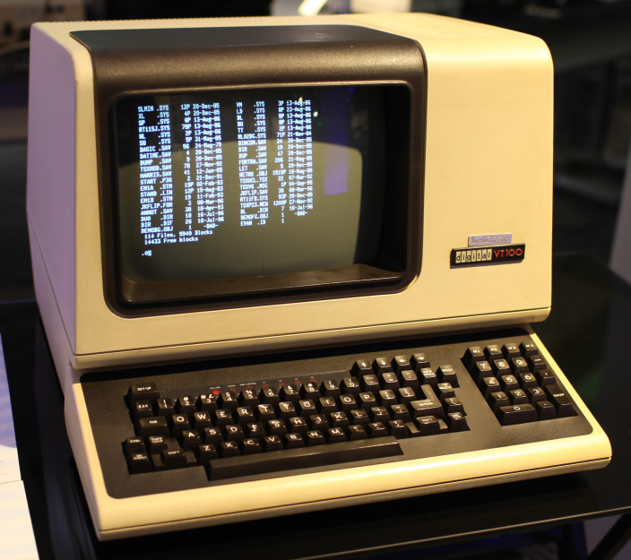

Therac-25 (15) (36)
THERACH is a radiation therapy machine.
Between 1985 and 1987 an accident caused the death of five patients and several
other injured.
The Therac-25 was a radiation therapy machine manufactured by AECL in the 80s. This machine works
with two modes of operation: firstly it delivers a low-power electron beam (beta particles) which kills
skin cancer, and secondly X-rays that involves penetrating deeper tissues (that can kill cancer cells in the lungs).
These room-sized medical devices would always cause some collateral damage to healthy tissue
around the tumors. As with chemotherapy, the hope is that the net effect heals the patient
more than it harms them.
Therac-25 was based upon a previous design of “Therac-20” and it relied on software controls to switch between two modes. At one point this radiation therapy device malfunctioned and delivered lethal radiation doses at several medical facilities. What engineers didn’t know was that both the 20 and the 25 were built upon an operations system that had been kludged together by a programmer with no formal training. Because of a subtle bug called “race condition”, a radiology technician had become very quick at typing commands into the Therac-25 machine. He accidentally entered “x” for X-Ray rather than “e” for Electron, so pressed the up key to choose the correct mode. At this point the machine fired the electron beam in high-power mode but with the metal X-ray target out of position.
Upon starting the program the machine shut down, displaying the error “Malfunction 54”. The patient was receiving his 9th treatment, and immediately knew something had gone terribly wrong. He reported hearing a buzzing sound, which was later determined to be the machine delivering radiation at maximum capacity, and feeling as though someone had poured hot coffee over his bath. After a few days, the patient suffered paralysis due to radiation overexposure, and ultimately died of further complications. The manufacturer believed the root cause was due to an electrical shock, and the machine was put back into service despite an electric company verifying this was not the issue, and that similar incidents had been reported to AECL before. The FDA declared the Therac-25 “defective” and imposed a ban on using the machinne Therac-25. Nowadays the Therac-25 is no longer used thanks to new safer technologies.